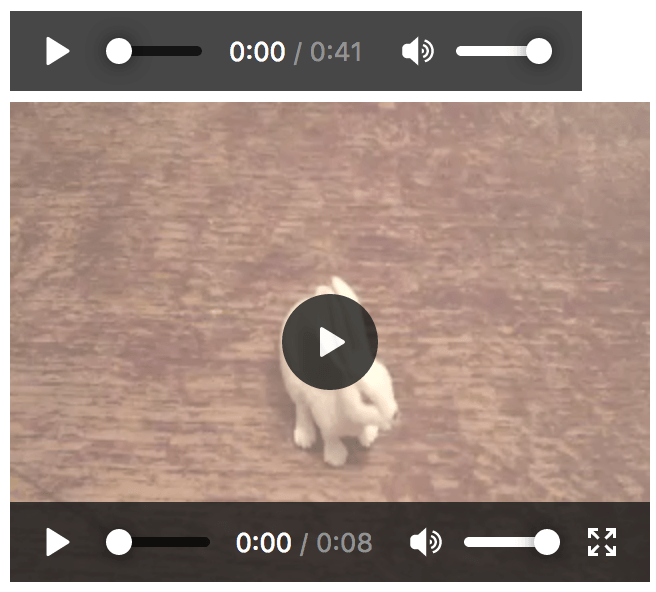
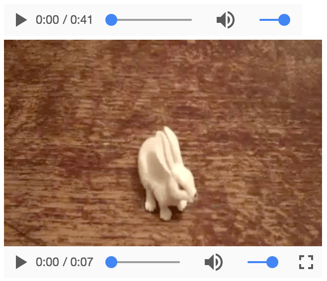

Another category of content that can create accessibility problems is multimedia — video, audio, and image content need to be given proper textual alternatives so they can be understood by assistive technologies and their users. This article shows how.
| Prerequisites: | Basic computer literacy, a basic understanding of HTML, CSS, and JavaScript, an understanding of what accessibility is. |
|---|---|
| Objective: | To understand the accessibility issues behind multimedia, and how to overcome them. |
So far in this module, we have looked at a variety of content and what needs to be done to ensure its accessibility, ranging from simple text content to data tables, images, native controls such as form elements and buttons, and even more complex markup structures (with WAI-ARIA attributes).
This article on the other hand looks at another general class of content that arguably isn't as easy to ensure accessibility for — multimedia. Images, audio tracks, videos, {{htmlelement("canvas")}} elements, etc., aren't as easily understood by screenreaders or navigated by the keyboard, and we need to give them a helping hand.
But don't despair — here we will help you navigate through the techniques available for making multimedia more accessible.
We already covered simple text alternatives for HTML images in our HTML: A good basis for accessibility article — you can refer back to there for the full details. In short, you should ensure that where possible visual content has an alternative text available for screenreaders to pick up and read to their users.
For example:
<img src="dinosaur.png"
alt="A red Tyrannosaurus Rex: A two legged dinosaur standing upright like a human, with small arms, and a large head with lots of sharp teeth.">
Implementing controls for web-based audio/video shouldn't be a problem, right? Let's investigate.
HTML5 video and audio instances even come with a set of inbuilt controls that allow you to control the media straight out of the box. For example (see native-controls.html source code and live):
<audio controls> <source src="viper.mp3" type="audio/mp3"> <source src="viper.ogg" type="audio/ogg"> <p>Your browser doesn't support HTML5 audio. Here is a <a href="viper.mp3">link to the audio</a> instead.</p> </audio> <br> <video controls> <source src="rabbit320.mp4" type="video/mp4"> <source src="rabbit320.webm" type="video/webm"> <p>Your browser doesn't support HTML5 video. Here is a <a href="rabbit320.mp4">link to the video</a> instead.</p> </video>
The controls attribute provides play/pause buttons, seek bar, etc. — the basic controls you'd expect from a media player. It looks like so in Firefox and Chrome:


However, there are problems with these controls:
To remedy this, we can create our own custom controls. Let's look at how.
HTML5 video and audio share an API — HTML Media Element — which allows you to map custom functionality to buttons and other controls — both of which you define yourself.
Let's take the video example from above and add custom controls to them.
First, grab a copy of our custom-controls-start.html, custom-controls.css, rabbit320.mp4, and rabbit320.webm files and save them in a new directory on your hard drive.
Create a new file called main.js and save it in the same directory.
First of all, let's look at the HTML for the video player, in the HTML:
<section class="player">
<video controls>
<source src="rabbit320.mp4" type="video/mp4">
<source src="rabbit320.webm" type="video/webm">
<p>Your browser doesn't support HTML5 video. Here is a <a href="rabbit320.mp4">link to the video</a> instead.</p>
</video>
<div class="controls">
<button class="playpause">Play</button>
<button class="stop">Stop</button>
<button class="rwd">Rwd</button>
<button class="fwd">Fwd</button>
<div class="time">00:00</div>
</div>
</section>
We've inserted some simple control buttons below our video. These controls of course won't do anything by default; to add functionality, we will use JavaScript.
We will first need to store references to each of the controls — add the following to the top of your JavaScript file:
const playPauseBtn = document.querySelector('.playpause');
const stopBtn = document.querySelector('.stop');
const rwdBtn = document.querySelector('.rwd');
const fwdBtn = document.querySelector('.fwd');
const timeLabel = document.querySelector('.time');
Next, we need to grab a reference to the video/audio player itself — add this line below the previous lines:
const player = document.querySelector('video');
This holds a reference to a {{domxref("HTMLMediaElement")}} object, which has several useful properties and methods available on it that can be used to wire up functionality to our buttons.
Before moving onto creating our button functionality, let's remove the native controls so they don't get in the way of our custom controls. Add the following, again at the bottom of your JavaScript:
player.removeAttribute('controls');
Doing it this way round rather than just not including the controls attribute in the first place has the advantage that if our JavaScript fails for any reason, the user still has some controls available.
First, let's set up the play/pause button. We can get this to toggle between play and pause with a simple conditional function, like the following. Add it to your code, at the bottom:
playPauseBtn.onclick = function() {
if(player.paused) {
player.play();
playPauseBtn.textContent = 'Pause';
} else {
player.pause();
playPauseBtn.textContent = 'Play';
}
};
Next, add this code to the bottom, which controls the stop button:
stopBtn.onclick = function() {
player.pause();
player.currentTime = 0;
playPauseBtn.textContent = 'Play';
};
There is no stop() function available on {{domxref("HTMLMediaElement")}}s, so instead we pause() it, and at the same time set the currentTime to 0.
Next, our rewind and fast forward buttons — add the following blocks to the bottom of your code:
rwdBtn.onclick = function() {
player.currentTime -= 3;
};
fwdBtn.onclick = function() {
player.currentTime += 3;
if(player.currentTime >= player.duration || player.paused) {
player.pause();
player.currentTime = 0;
playPauseBtn.textContent = 'Play';
}
};
These are very simple, just adding or subtracting 3 seconds to the currentTime each time they are clicked. In a real video player, you'd probably want a more elaborate seeking bar, or similar.
Note that we also check to see if the currentTime is more than the total media duration, or if the media is not playing, when the Fwd button is pressed. If either condition is true, we stop the video, to avoid the user interface going wrong if they attempt to fast forward when the video is not playing or fast forward past the end of the video.
Last of all, add the following to the end of the code, to control the time elapsed display:
player.ontimeupdate = function() {
let minutes = Math.floor(player.currentTime / 60);
let seconds = Math.floor(player.currentTime - minutes * 60);
let minuteValue;
let secondValue;
if (minutes<10) {
minuteValue = "0" + minutes;
} else {
minuteValue = minutes;
}
if (seconds<10) {
secondValue = "0" + seconds;
} else {
secondValue = seconds;
}
mediaTime = minuteValue + ":" + secondValue;
timeLabel.textContent = mediaTime;
};
Each time the time updates (once per second), we fire this function. It works out the number of minutes and seconds from the given currentTime value (which is in seconds), adds a leading 0 if either the minute or second value is less than 10, and then creates the display readout and adds it to the time label.
This gives you a basic idea of how to add custom player functionality to video/audio player instances. For more information on how to add more complex features to video/audio players, see:
We've also created an advanced example to show how you could create an object-oriented system that finds every video and audio player on the page (no matter how many there are) and adds our custom controls to it. See custom-controls-oojs (also see the source code).
To provide deaf people with access to audio content, you really need to create text transcripts. These can either be included on the same page as the audio in some way or included on a separate page and linked to.
In terms of actually creating the transcript, your options are:
As with most things in life, you tend to get what you pay for; different services will vary in accuracy and time taken to produce the transcript. If you pay a reputable company or AI service to do the transcription, you will probably get it done rapidly and to a high quality. If you don't want to pay for it, you are likely to get it done at a lower quality, and/or slowly.
It is not OK to publish an audio resource but promise to publish the transcript later on — such promises often aren't kept, which will erode trust between you and your users. If the audio you are presenting is something like a face to face meeting or live spoken performance, it would be acceptable to take notes during the performance, publish them in full along with the audio, then seek help in cleaning up the notes afterward.
If you use an automated service, then you'll probably have to use the user interface that the tool provides. For example, take a look at our Wait, ARIA Roles Have Categories? video and choose the three-dot menu (. . .) > Show Transcript. You'll see the transcript come up in a separate panel.
If you are creating your own user interface to present your audio and associated transcript, you can do it however you like, but it might make sense to include it in a showable/hideable panel; see our audio-transcript-ui example (also see the source code).
On occasions where there are visuals accompanying your audio, you'll need to provide audio descriptions of some kind to describe that extra content.
In many cases, this will take the form of video, in which case you can implement captions using the techniques described in the next section of the article.
However, there are some edge cases. You might for example have an audio recording of a meeting that refers to an accompanying resource such as a spreadsheet or chart. In such cases, you should make sure that the resources are provided along with the audio + transcript, and specifically link to them in the places where they are referred to in the transcript. This of course will help all users, not just people who are deaf.
Note: An audio transcript will in general help multiple user groups. As well as giving deaf users access to the information contained in the audio, think about a user with a low bandwidth connection, who would find downloading the audio inconvenient. Think also about a user in a noisy environment like a pub or bar, who is trying to access the information but can't hear it over the noise.
To make video accessible for deaf, blind, or even other groups of users (such as those on low bandwidth, or who don't understand the language the video is recorded in), you need to include text tracks along with your video content.
Note: text tracks are also useful for potentially any user, not just those with disabilities. for example, some users may not be able to hear the audio because they are in noisy environments (like a crowded bar when a sports game is being shown) or might not want to disturb others if they are in a quiet place (like a library.)
This is not a new concept — television services have had closed captioning available for quite a long time:
Whereas many countries offer English films with subtitles written in their own native languages, and different language subtitles are often available on DVDs, for example
There are different types of text tracks for different purposes. The main ones you'll come across are:
Text tracks for displaying with HTML5 video need to be written in WebVTT, a text format containing multiple strings of text along with metadata such as what time in the video you want each text string to be displayed, and even limited styling/positioning information. These text strings are called cues.
A typical WebVTT file will look something like this:
WEBVTT 1 00:00:22.230 --> 00:00:24.606 This is the first subtitle. 2 00:00:30.739 --> 00:00:34.074 This is the second. ...
To get this displayed along with the HTML media playback, you need to:
<track> should be placed within <audio> or <video>, but after all <source> elements. Use the {{htmlattrxref("kind","track")}} attribute to specify whether the cues are subtitles, captions, or descriptions. Furthermore, use {{htmlattrxref("srclang","track")}} to tell the browser what language you have written the subtitles in.Here's an example:
<video controls> <source src="example.mp4" type="video/mp4"> <source src="example.webm" type="video/webm"> <track kind="subtitles" src="subtitles_en.vtt" srclang="en"> </video>
This will result in a video that has subtitles displayed, kind of like this:

For more details, please read Adding captions and subtitles to HTML5 video. You can find the example that goes along with this article on Github, written by Ian Devlin (see the source code too.) This example uses JavaScript to allow users to choose between different subtitles. Note that to turn the subtitles on, you need to press the "CC" button and select an option — English, Deutsch, or Español.
Note: Text tracks and transcriptions also help you with {{glossary("SEO")}}, since search engines especially thrive on text. Text tracks even allow search engines to link directly to a spot partway through the video.
You've reached the end of this article, but can you remember the most important information?
We've not written a new set of assessments for this article, because there are already assessments available in our HTML Multimedia and embedding module that test your knowledge of the information presented here. If you haven't already, go and try out the assessments at Test your skills: HTML images and Test your skills: Multimedia and embedding.
This chapter has provided a summary of accessibility concerns for multimedia content, along with some practical solutions.
It is not always easy to make multimedia accessible. If for example, you are dealing with an immersive 3D game or virtual reality app, it really is quite difficult to provide text alternatives for such an experience, and you might argue that blind users are not really in the target audience bracket for such apps.
You can however make sure that such an app has good enough color contrast and clear presentation so it is perceivable to those with low vision/color blindness, and also make it keyboard accessible. Remember that accessibility is about doing as much as you can, rather than striving for 100% accessibility all the time, which is often impossible.
{{PreviousMenuNext("Learn/Accessibility/WAI-ARIA_basics","Learn/Accessibility/Mobile", "Learn/Accessibility")}}